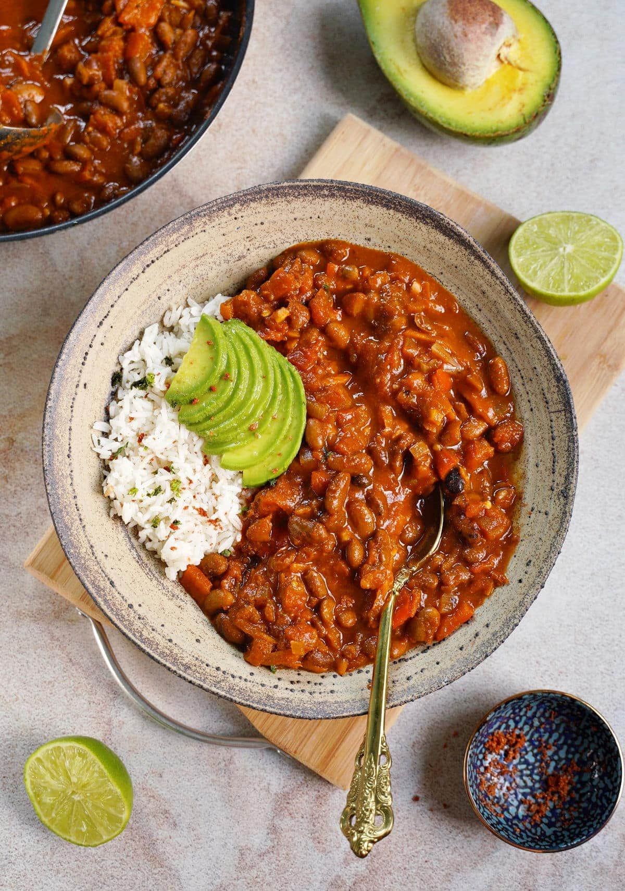

Chilli Non Carne

Description
Yeah, yeah, I know the actual spanish term for it would
be chilli sin carne. But who doesn't love a good pun, right?
This recipe is essentially the same as a regular chilli
con carne, but subbing out the mince for some meat
subsitute mince. No more having to follow overly complicated
recipes having you shred, smoke, bake and shake some poor
tofu so that it resembles mince.
Ingredients
- 800g fake mince (literally any brand will do, I'm
not your dad I don't care where you get it from)
- 400g Kidney beans
- 500g sliced mushrooms
- 2x 400g tinned tomatoes
- 2 tbs paprika
- 2 tsp chilli powder
- 1 tsp cumin
- 1 tsp garlic powder
- 400g diced onions
- 4 bell peppers, diced
- 375g brown rice
- 250ml vegetable stock
Steps
- Brown in the onions in a fry pan
- Add in bell peppers, cooking them until soft
- transfer vegetables to a large sausepan, and
add in mushrooms, kidney beans, tinned tomatoes,
fake mince, and vegetable stock. Bring to boil
while stirring frequently, adding in the spices as
you go.
- Let simmer while the brown rice cooks
- Follow packet instructions for cooking the rice.